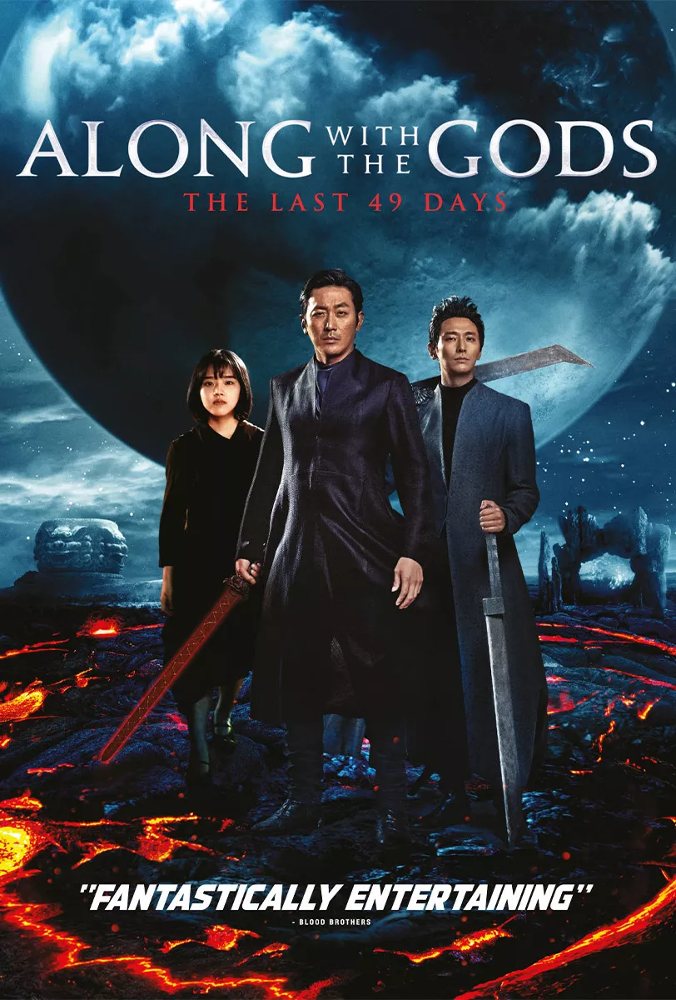

Home
Gallery
Review
Home
Gallery
Review
Along with the Gods: The Last 49 Days
2018 - IMDb Rating 7.1/10
Хүн нас баран дараа төрлөө олохын тулд 49 хоногийн хугацаанд 7 шүүлтийг даван туулдаг. Хууран мэхлэлт, Хайхрамжгүй байдал, шударга бус байдал, урвалт, хүчирхийлэл, аллага болон эцэг эхдээ хүндэтгэлийн шүүхтэй нүүр тулан давж чадвал дараа төрлөө олдог
Нэг залуу нас баран 3 эрлэгийн элчтэй уулзах ба тэр 3 эрлэгийн элч 7 шүүлийг давахад нь туслах үүрэгтэй. Хэрвээ энэ залуу 7 шүүлтийг амжилттай даван дараа төрлөө олох үед 3 эрлэгийн элч дахин төрөх боломж нь нэмэгдэх аж
Director Yong-hwa Kim
Writer Ho-min Ju
Stars